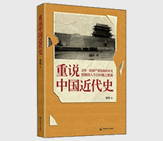

重说中国近代史

| 作者: 张鸣 著 | 开本: 16开 |
| 出版社: 中国致公出版社 | 纸张: 胶版纸 |
| 出版时间: 2012-02 | 页数: 309页 |
| 版次: 1 | 字数: 230千字 |
| ISBN: 9787514502022 | 定价: 32.00 |
| 分类: 历史 | 装帧: 平装 |
内容简介:
《重说中国近代史》还原了一段被扭曲的历史，挖掘出国人今日问题的根源。《重说中国近代史》源自人大的一门热门选修课，即张鸣老师开设的政治史公开课，它靠同学们口碑相传而走红校园，最终使更多的人对这段看起来枯燥无比的历史重新认真审视起来。 这门课为什么如此受欢迎？原来在张鸣老师的还原下，中国近代史变得如此复杂、精彩，又是如此的颠覆，它与我们记忆里的古板印象迥然不同，绝非教科书上的忠奸两列、黑白分明。当诸多人物与史实呈现在我们面前时，难以用一句简单的是非作判定，在正视一段被扭曲的中国近代史的同时，我们也能发现国人今日问题的精神根源。 基于此，我们将这门课的讲课稿集结成书，希望与更多的人分享这段充满矛盾与悖论的真实历史：中国与西方、清廷与民间、满族与汉族士人、洋教与本土信仰、枪杆与笔杆、造反和维新、科举与革命……是的，那段历史，除去屈辱与仇恨，还有着太多的内容值得重新去回望和反思。 正如张鸣教授所说：如果我们不知道或者完全无视这个过程，就很难在历史长河中找到自己的位置，很难安放好自己的位置，在世界格局中也定位不好自己的位置。诚如斯言。一起来翻阅《重说中国近代史》吧！
作者简介:
张鸣，作为中国人民大学的博士生导师，他个性鲜明，社会责任感使然，以深厚的文化底蕴和深刻的人文关怀关注天下事，并以文人悲悯的情怀为当下人物事件揭下虚华假面，其独立特行的观点为蒙蒙大众指点万千丑态，真相豁然，真知毕然。张鸣教授的主要著作还有《武夫治国梦》、《乡土心路八十年》、《乡村社会权力和文化结构的变迁》等数种，以及历史文化随笔，有《直截了当的独白》、《历史的坏脾气》、《历史的底稿》、《历史的空白处》等。
Copyright © 2018-2020 徐悦佳. All rights reserved.